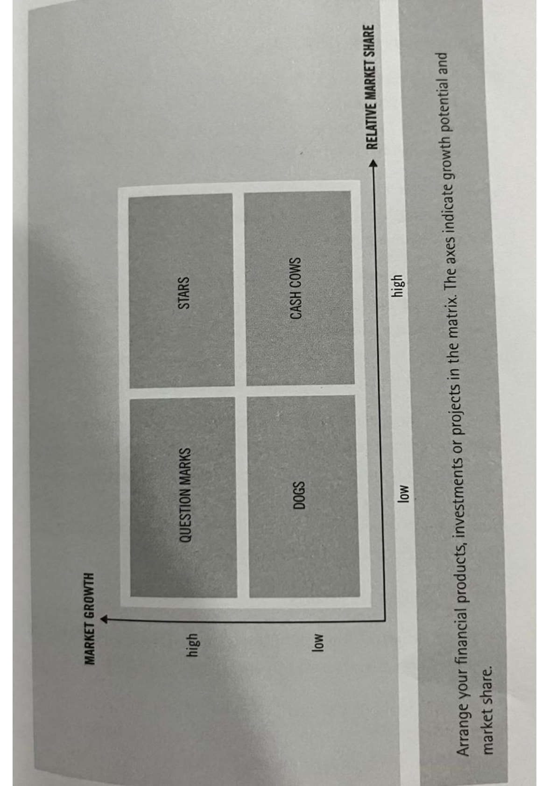
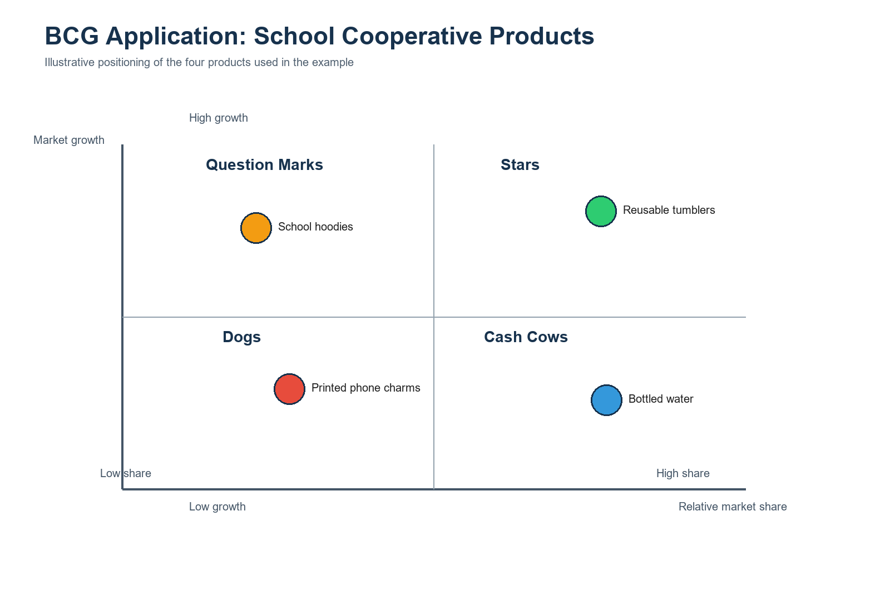

Learning Goals
What students should be able to do
Prioritize better
Distinguish urgent tasks from important tasks and allocate effort more deliberately.
Read situations clearly
Separate internal conditions from external factors before choosing a strategy.
Allocate resources
Evaluate products or projects based on growth potential and relative competitive strength.
Lecture Content
Methods and simple applications
01
The Eisenhower Matrix
Use it to decide what to do now, schedule, delegate, or remove.
Use when
You need to sort tasks quickly without confusing urgency with long-term value.
Decision cue
Ask whether a task matters for outcomes, or only feels noisy because it is immediate.
Main idea
The Eisenhower Matrix classifies tasks by importance and urgency. Its main value is protecting important work before it becomes a crisis.
Four boxes
- Important and urgent: do it now
- Important but not urgent: schedule it
- Urgent but not important: delegate it
- Not urgent and not important: reduce or remove it
Simple application
Situation: A student must submit an assignment tonight, prepare for next week’s midterm, reply to a class message, avoid distraction, and meet the project group.
Decision: Finish the assignment first, schedule the midterm and project tasks, reply quickly to the message, and avoid low-value distractions during study time.
Teaching point: urgency often feels louder than importance, but the best decisions protect long-term goals.


02
SWOT Analysis
Use it to understand internal conditions and external pressures before acting.
Use when
You need a disciplined way to map what is inside your control and what is outside it.
Decision cue
Turn the four lists into a strategy instead of treating them as a descriptive checklist.
Main idea
SWOT separates the decision environment into four areas: Strengths, Weaknesses, Opportunities, and Threats.
How to read it
- Strengths: internal advantages
- Weaknesses: internal limitations
- Opportunities: external chances for improvement
- Threats: external risks or obstacles
Simple application
Situation: A student wants to start a small online snack business for the campus community.
Decision: Start with a small menu, use social media for promotion, manage inventory carefully, and focus on a clear campus niche.
Teaching point: SWOT becomes useful only when the list leads to strategy.


03
The BCG Box
Use it to decide where to invest, maintain, test, or phase out.
Use when
You need to compare several products or initiatives inside one shared portfolio.
Decision cue
Balance growth potential with current competitive strength before allocating scarce resources.
Main idea
The BCG Box evaluates products or projects using market growth and relative market share.
Four categories
- Stars: high share, high growth
- Cash Cows: high share, low growth
- Question Marks: low share, high growth
- Dogs: low share, low growth
Simple application
Situation: A school cooperative sells bottled water, school hoodies, reusable tumblers, and printed phone charms.
Decision: Invest in tumblers, rely on bottled water for steady income, test hoodies further, and consider stopping phone charms.
Teaching point: the BCG Box is a decision aid, not a substitute for realistic judgment.


At A Glance
Quick comparison of the three methods
| Method | Best used for | Main question |
|---|---|---|
| Eisenhower Matrix | Prioritizing tasks | What should be done now, scheduled, delegated, or dropped? |
| SWOT Analysis | Understanding a decision context | What are the internal and external advantages and risks? |
| BCG Box | Evaluating a portfolio | Where should resources be invested, maintained, tested, or reduced? |
Classroom Use
Suggested class activity
Group 1
Use the Eisenhower Matrix to organize a student’s weekly tasks.
Group 2
Use SWOT Analysis for a club event or small business idea.
Group 3
Use the BCG Box for school products, programs, or projects.
Ask each group to present
- How they classified the case
- What action they recommend
- What assumptions they made
Materials
Open the lecture materials
Use the source notes for revision, or stay on this page as the primary online study version for your students.